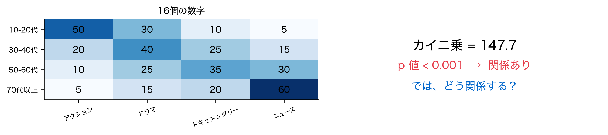
第14回 対応分析
独立の表からのずれを、重みを付けて低ランク近似する
第I部 理論
これまでの表
- 第1〜13回のデータ行列 \mathbf X：1行が1個体、1列が測った量
- マスの中身は、測った値そのもの（数）
別の表もある。数えた表である。
場面①：注文の数の表
ラーメン屋の1か月の注文 1,210 杯を、メニュー × 時間帯で数えた（人工データ）。行も列もカテゴリ。
知りたいのは組み合わせ
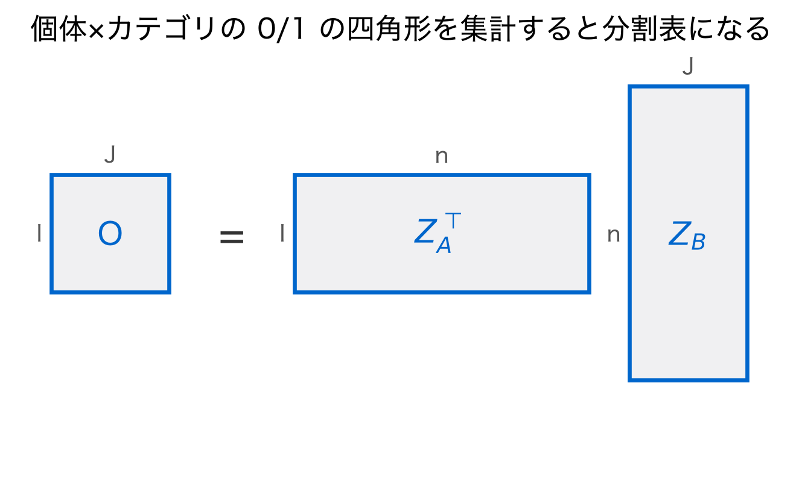
豚骨は深夜によく出るのか。つけ麺は昼か。知りたいのは、どの時間帯にどのメニューが出るかという関連の形。
場面②：第10回のように
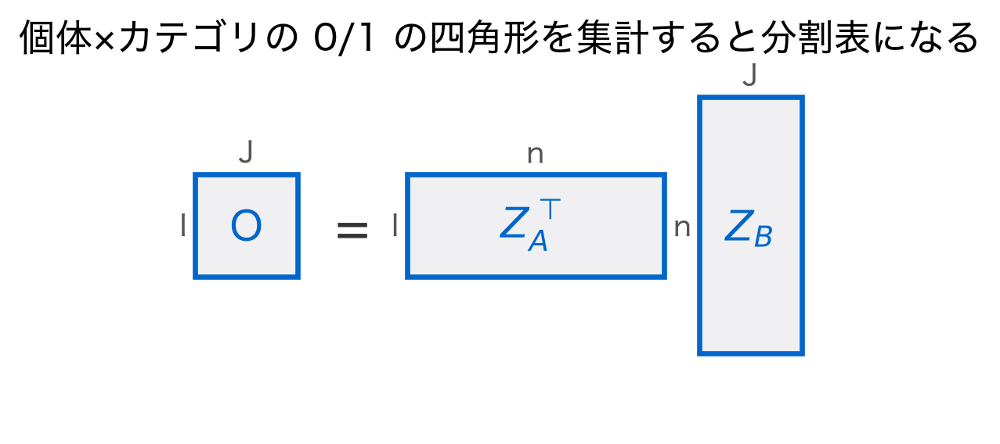
表をデータ行列とみてそのまま特異値分解（第10回）。1本目で 75.2%。
場面③：1本目は「量」
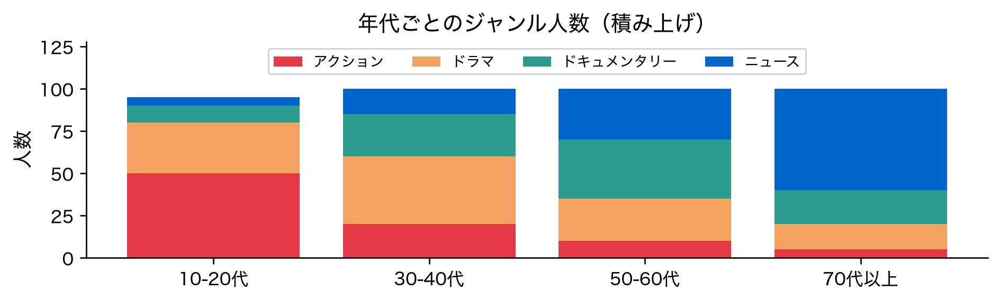
(b) は (c) とほぼ同じ（差は最大 17.1 杯）。(c) は行の合計と列の合計だけから作った表。
量しか見ていない

(c) が表すのは「醤油はよく出る」「夜は客が多い」だけ。どの時間帯にどのメニューか、には答えていない。
今回の問い
第13回の最後に、問いを1つ残した。
行と列が両方カテゴリなら？
今回覚える言葉
- 分割表と行プロファイル
- 独立のモデル・期待度数
- 重み付き最小二乗法
- χ²距離・総慣性
- 対応分析（行の点・列の点）
答えの見通し：ずれを近似
- 独立なら期待される表（(c) の表）を先に引く
- 残ったずれを、期待度数で割った二乗で測る（重み付き最小二乗法）
- 第10回の特異値分解を1回：上位 Q 本が最良 → 行と列を1枚の地図に
位置づけ：重み付きの行
| モデル | 近似する相手 | 目的関数 | 解き方 | 回 |
|---|---|---|---|---|
| 主成分分析 | \mathbf X | \lVert\mathbf X-\mathbf F\mathbf A^\top\rVert_F^2 | 特異値分解を1回 | 第10回 |
| k-means | \mathbf X | \lVert\mathbf X-\mathbf G\mathbf C\rVert_F^2 | 交互に解く | 第11回 |
| 対応分析 | 比率の表 \mathbf P | \sum_{i,j}(p_{ij}-\hat p_{ij})^2/(r_ic_j) | 特異値分解を1回 | 第14回 |
推定法に重み付き最小二乗法が加わる。
次の問い：表を記号で書く
- 度数は、総数 n が変わると全部が変わる
- 行の大きさ（よく出るメニュー）と、行の中の形（いつ出るか）を分けたい
問い：表を、どの記号で書けばよいか？
道具①：比率の表
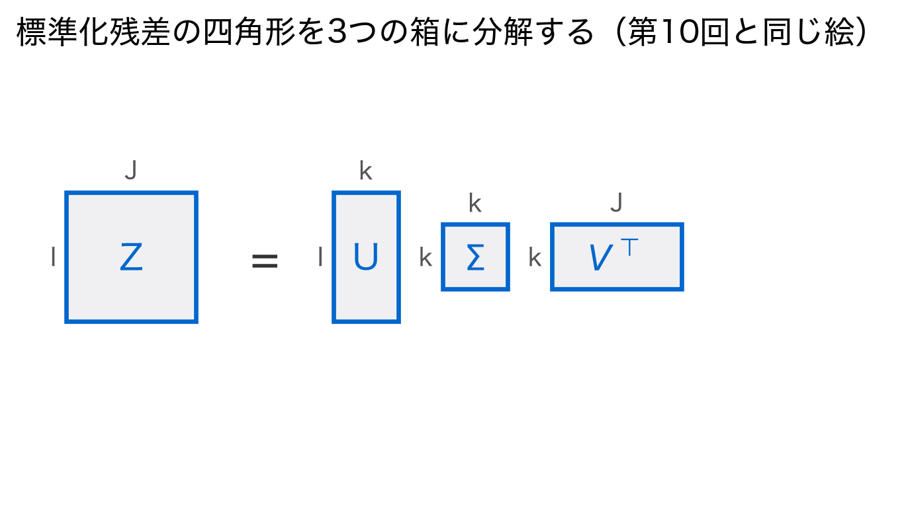
各マスを総数で割る：p_{ij}=o_{ij}/n。全マスを足すと1。
道具①：行の周辺
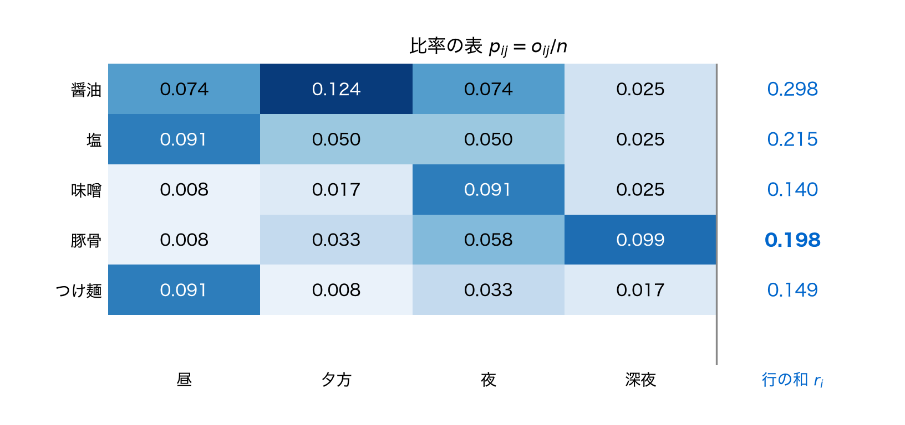
行ごとに足す：r_i=\sum_{j}p_{ij}。豚骨は 240/1,210 = 0.198。
道具①：列の周辺
列ごとに足す：c_j=\sum_{i}p_{ij}。深夜は 0.190。
道具①：ベクトルで
\boldsymbol r=\mathbf P\mathbf 1_J,\qquad \boldsymbol c=\mathbf P^\top\mathbf 1_I,\qquad \mathbf 1_I^\top\boldsymbol r=\mathbf 1_J^\top\boldsymbol c=1
\mathbf 1_J は1を J 個並べた縦ベクトル。1を掛けて足すと、行の和・列の和になる。
道具②：周辺を対角に
\mathbf D_r=\operatorname{diag}(r_1,\dots,r_I),\qquad \mathbf D_c=\operatorname{diag}(c_1,\dots,c_J)
周辺を対角に並べ、ほかは0の行列。
道具②：対角行列で割る
\bigl(\mathbf D_r^{-1}\mathbf P\bigr)_{ij}=\frac{p_{ij}}{r_i},\qquad \bigl(\mathbf D_r^{-1/2}\mathbf A\,\mathbf D_c^{-1/2}\bigr)_{ij}=\frac{a_{ij}}{\sqrt{r_ic_j}}
左から掛けると行ごと、右から掛けると列ごとに割る。マスごとの割り算を、行列の積で書ける。
道具③：行プロファイル
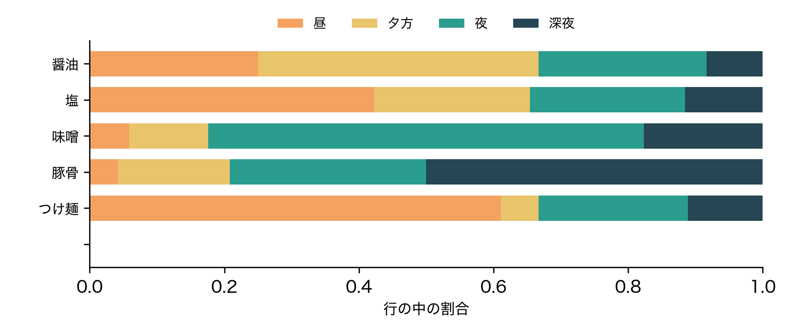
行 i を r_i で割った形 \boldsymbol a_i（\mathbf D_r^{-1}\mathbf P の行）。足すと1。豚骨は深夜が多い。
道具③：平均の形
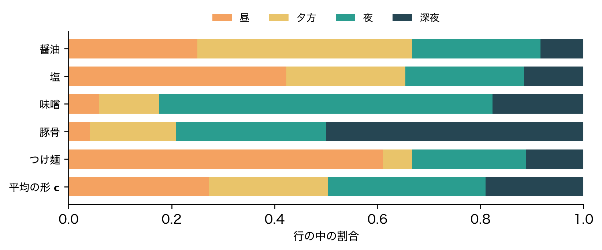
行の形を r_i で重み付けして平均すると \sum_ir_i\boldsymbol a_i=\boldsymbol c。列の周辺が平均の形。
道具④：第10回の答え
\min_{\operatorname{rank}(\mathbf Y)\le Q}\lVert\mathbf S-\mathbf Y\rVert_F^2 \ \Longrightarrow\ \hat{\mathbf Y}=\mathbf K_1\boldsymbol\Delta_1\mathbf L_1^\top,\quad \min=\sum_{m>Q}\delta_m^2
\mathbf S=\mathbf K\boldsymbol\Delta\mathbf L^\top。どの行列でも、特異値分解して上位 Q 本を残すのが最良（Eckart–Young）。
道具がそろった
- 比率の表 \mathbf P と、行の周辺 \boldsymbol r・列の周辺 \boldsymbol c
- 対角行列 \mathbf D_r,\mathbf D_c：行ごと・列ごとに割る
- 行プロファイル \boldsymbol a_i（行の形）と、平均の形 \boldsymbol c
- Eckart–Young：特異値分解の上位 Q 本が最良
これで「関連が無い表」を書ける。
次の問い：関連が無い表とは
- 関連の形を見るには、まず「関連が無い」表を決めておく
- 行の形が、どの行も同じだったら？
問い：関連が無い表は、どんな表か？
モデル①：独立なら
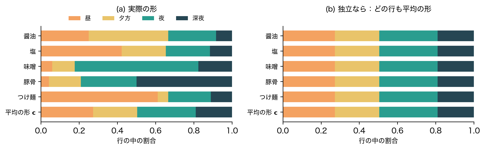
どのメニューも、店全体と同じ割合で各時間帯に出る：\boldsymbol a_i=\boldsymbol c（すべての行）。
モデル①：1マスで書く
p_{ij}=r_i\,c_j\qquad\Longleftrightarrow\qquad \boldsymbol a_i=\boldsymbol c\quad(\text{すべての行})
a_{ij}=p_{ij}/r_i なので。度数に直した e_{ij}=nr_ic_j を期待度数と呼ぶ。
モデル②：独立はランク1
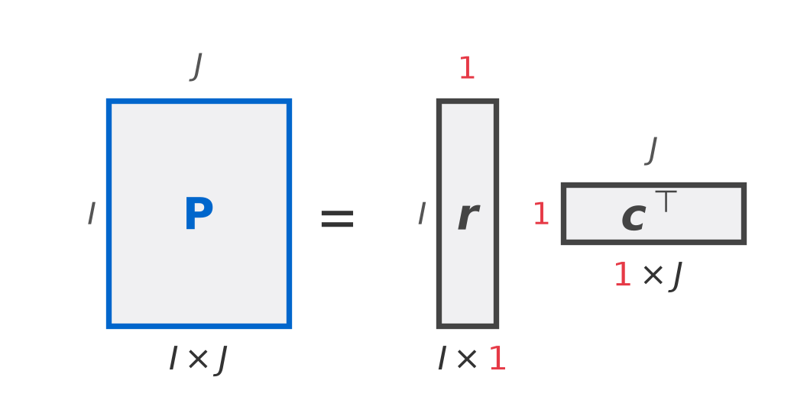
\mathbf P=\boldsymbol r\boldsymbol c^\top：縦ベクトルと横ベクトルの積。ランク1の行列。
モデル②：場面③の (c)
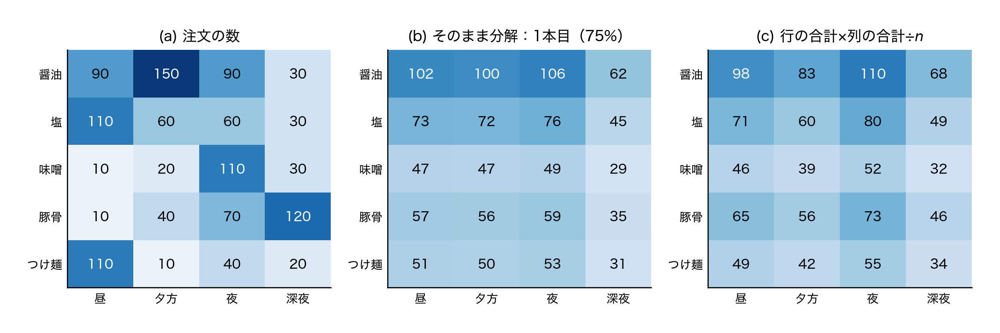
(c) はこの n\boldsymbol r\boldsymbol c^\top。周辺は表から決まるので、推定するものはほかに無い。
モデル③：実際はずれる
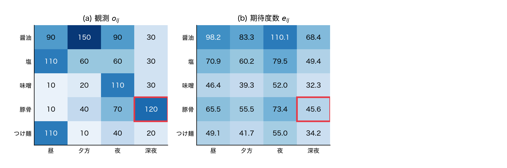
豚骨×深夜は、期待度数 45.6 杯に対して、実際は 120 杯。
モデル③：期待の何倍か
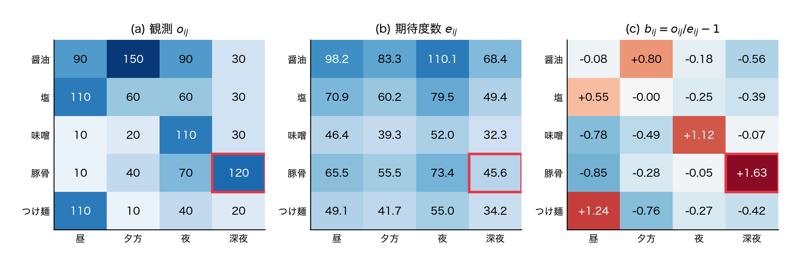
b_{ij} は「期待の何倍か」から1を引いたもの。豚骨×深夜は +1.63。正なら多く、負なら少ない。
モデル③：ずれを掛ける
p_{ij}=r_ic_j\,(1+b_{ij}),\qquad b_{ij}=\frac{o_{ij}}{e_{ij}}-1
独立のときの比率に (1+b_{ij}) を掛ける。b_{ij}=0 なら独立。
モデル④：1行ずつ
\boldsymbol a_i=\boldsymbol c+\mathbf D_c\,\boldsymbol b_i
両辺を r_i で割り、行 i を縦に並べた。行の形 ＝ 平均の形 ＋ ずれ。\boldsymbol b_i=\boldsymbol 0 なら独立。
モデル⑤：行列で

\mathbf P=\boldsymbol r\boldsymbol c^\top+\mathbf D_r\mathbf B\mathbf D_c。\mathbf D_r\mathbf B\mathbf D_c のマスは r_ib_{ij}c_j。
モデル⑥：ずれを低ランクで
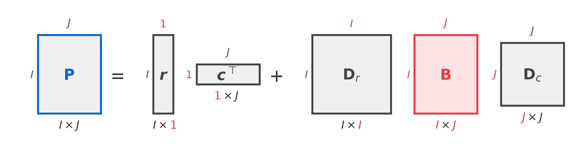
このままではどの表にも当てはまる。ずれ \mathbf B のランクを Q 以下に制限する。Q=0 で独立のモデル。
次の問い：ずれをどう測るか
- モデルの値 \hat p_{ij} と観測 p_{ij} の差を、全マスで足したい
- 第1回は、差の二乗をそのまま足した
問い：どのマスの差も、同じ重さで足してよいか？
同じ5杯のずれ
| マス | 期待度数 e | 観測 o | 差 o-e |
|---|---|---|---|
| 少ないマス | 10杯 | 15杯 | 5杯 |
| 多いマス | 100杯 | 105杯 | 5杯 |
差はどちらも5杯。同じだけ目立つずれだろうか。
期待の何倍かで比べる
| マス | 期待度数 e | 観測 o | 差 o-e | 何倍か | (o-e)^2/e |
|---|---|---|---|---|---|
| 少ないマス | 10杯 | 15杯 | 5杯 | 1.5倍 | 2.5 |
| 多いマス | 100杯 | 105杯 | 5杯 | 1.05倍 | 0.25 |
期待度数で割ると、少ないマスのずれの方が10倍重くなる。
目的関数①：1マスの誤差
\frac{(p_{ij}-\hat p_{ij})^2}{r_i\,c_j}
二乗誤差を、独立のときの比率 r_ic_j で割る。\hat p_{ij}=r_ic_j(1+b_{ij}) はモデルの値。
目的関数②：全マスで
\mathcal E(\mathbf B)=\sum_{i=1}^{I}\sum_{j=1}^{J}\frac{(p_{ij}-\hat p_{ij})^2}{r_ic_j}
全部のマスで足す。これが本章の目的関数。
目的関数③：重み付き最小二乗
\mathcal E(\mathbf B)=\sum_{i,j}w_{ij}\,(p_{ij}-\hat p_{ij})^2,\qquad w_{ij}=\frac{1}{r_ic_j}
第1回の \sum(y-\hat y)^2 に、マスごとの重みを付けたもの。重み付き最小二乗法と呼ぶ。
目的関数④：1行ずつ（χ²距離）
\sum_{j=1}^{J}\frac{(p_{ij}-\hat p_{ij})^2}{r_ic_j} =r_i\sum_{j=1}^{J}\frac{(a_{ij}-\hat a_{ij})^2}{c_j} =r_i\,d_\chi^2(\boldsymbol a_i,\hat{\boldsymbol a}_i)
分子と分母を r_i^2 で割ると、行の形どうしの比べ方になる。
目的関数④：χ²距離とは
d_\chi^2(\boldsymbol x,\boldsymbol y)=\sum_{j=1}^{J}\frac{(x_j-y_j)^2}{c_j}
2つの形の差を、列ごとに平均の割合 c_j で割って二乗和。目的関数は、行の重み r_i を付けたその和。
目的関数⑤：行列で
\begin{aligned} &\mathcal E(\mathbf B)=\bigl\lVert\mathbf D_r^{-1/2}\bigl(\mathbf P-\hat{\mathbf P}\bigr)\mathbf D_c^{-1/2}\bigr\rVert_F^2\\ &\hat{\mathbf P}=\boldsymbol r\boldsymbol c^\top+\mathbf D_r\mathbf B\mathbf D_c \end{aligned}
道具②：マスごとに \sqrt{r_ic_j} で割ってから、全マスの二乗和。
目的関数⑥：Q＝0の値
\mathcal E_0=\sum_{i,j}\frac{(p_{ij}-r_ic_j)^2}{r_ic_j} =\frac1n\sum_{i,j}\frac{(o_{ij}-e_{ij})^2}{e_{ij}}=\frac{\chi^2}{n}
独立のモデルで残る誤差。n 倍したものがピアソンのχ²統計量。
目的関数⑥：総慣性
\mathcal E_0=\sum_{i=1}^{I}r_i\,d_\chi^2(\boldsymbol a_i,\boldsymbol c)
行の形が平均の形のまわりにどれだけ散らばるか。総慣性と呼ぶ。人工データで 0.4121（χ² = 498.6）。
次の問い：重みをどう消すか
- 目的関数は、マスごとに重みの付いた二乗誤差
- 道具④（Eckart–Young）が解くのは、重みの無い \lVert\mathbf S-\mathbf Y\rVert_F^2
問い：重みを消して、道具④の形に持ち込めるか？
導出①：標準化残差行列
s_{ij}=\frac{p_{ij}-r_ic_j}{\sqrt{r_ic_j}},\qquad \mathbf S=\mathbf D_r^{-1/2}\bigl(\mathbf P-\boldsymbol r\boldsymbol c^\top\bigr)\mathbf D_c^{-1/2}
独立のモデルからのずれを、マスごとに \sqrt{r_ic_j} で割った行列。二乗和は \lVert\mathbf S\rVert_F^2=\mathcal E_0。
導出①：Sの中身
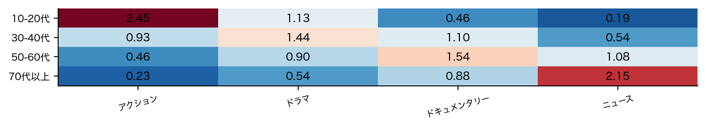
\sqrt n 倍すると (o-e)/\sqrt e。赤は期待より多く、青は少ない。豚骨×深夜が最も大きい。
導出②：S − Yの形に
\begin{aligned} \mathcal E(\mathbf B) &=\bigl\lVert\mathbf D_r^{-1/2}\bigl(\mathbf P-\boldsymbol r\boldsymbol c^\top-\mathbf D_r\mathbf B\mathbf D_c\bigr)\mathbf D_c^{-1/2}\bigr\rVert_F^2\\ &=\lVert\mathbf S-\mathbf Y\rVert_F^2,\qquad \mathbf Y=\mathbf D_r^{1/2}\mathbf B\mathbf D_c^{1/2} \end{aligned}
括弧を2つに分けた。前は \mathbf S、後ろは \mathbf D_r^{-1/2}\mathbf D_r=\mathbf D_r^{1/2} から \mathbf Y。
導出②：ランクは変わらない
\operatorname{rank}(\mathbf Y)=\operatorname{rank}\bigl(\mathbf D_r^{1/2}\mathbf B\mathbf D_c^{1/2}\bigr)=\operatorname{rank}(\mathbf B)\le Q
正の対角行列を掛けてもランクは同じ。重みは、相手を \mathbf S に替えることで消えた。
導出③：Eckart–Young
\mathbf S=\mathbf K\boldsymbol\Delta\mathbf L^\top,\qquad \hat{\mathbf Y}=\mathbf K_1\boldsymbol\Delta_1\mathbf L_1^\top,\qquad \min\mathcal E=\sum_{m>Q}\delta_m^2
道具④をそのまま当てる。反復も初期値も要らない。
導出④：Bに戻す
\hat{\mathbf B}=\mathbf D_r^{-1/2}\,\hat{\mathbf Y}\,\mathbf D_c^{-1/2}=\mathbf D_r^{-1/2}\mathbf K_1\boldsymbol\Delta_1\mathbf L_1^\top\mathbf D_c^{-1/2}
\mathbf Y=\mathbf D_r^{1/2}\mathbf B\mathbf D_c^{1/2} を逆にたどる。
導出④：行の点と列の点
\hat{\mathbf B}=\mathbf F\boldsymbol\Delta_1^{-1}\mathbf G^\top,\qquad \mathbf F=\mathbf D_r^{-1/2}\mathbf K_1\boldsymbol\Delta_1,\quad \mathbf G=\mathbf D_c^{-1/2}\mathbf L_1\boldsymbol\Delta_1
\mathbf F（I\times Q）の各行が行の点、\mathbf G（J\times Q）の各行が列の点。主座標と呼ぶ。
導出⑤：1マスで読む
\frac{\hat o_{ij}}{e_{ij}}=1+\hat b_{ij}=1+\sum_{m=1}^{Q}\frac{f_{im}\,g_{jm}}{\delta_m}
「期待の何倍か」を、行の点と列の点の積の和で近似する。Q=0 なら1（独立）。
アルゴリズム：特異値分解1回
- 比率と周辺：\mathbf P=\mathbf O/n、\boldsymbol r=\mathbf P\mathbf 1_J、\boldsymbol c=\mathbf P^\top\mathbf 1_I、\mathbf D_r、\mathbf D_c
- ずれを割る：\mathbf S=\mathbf D_r^{-1/2}(\mathbf P-\boldsymbol r\boldsymbol c^\top)\mathbf D_c^{-1/2}
- 特異値分解を1回：\mathbf S=\mathbf K\boldsymbol\Delta\mathbf L^\top
- 点を作る：\mathbf F\leftarrow\mathbf D_r^{-1/2}\mathbf K_1\boldsymbol\Delta_1、\mathbf G\leftarrow\mathbf D_c^{-1/2}\mathbf L_1\boldsymbol\Delta_1 を同じ平面に描く
- 慣性を出す：軸 m の慣性 \delta_m^2、寄与率 \delta_m^2/\sum_{m'}\delta_{m'}^2、\chi^2=n\sum_m\delta_m^2
第10回の手順との違い
- 第10回と同じく、初期値も反復も無い。特異値分解を1回
- 違い①：手順2で、独立の表を引いて \sqrt{r_ic_j} で割る
- 違い②：手順4で、特異ベクトルに \mathbf D_r^{-1/2}・\mathbf D_c^{-1/2} を掛けて重みを戻す
手順2を飛ばすと、場面②のとおり1本目が量に取られる。
次の問い：解から何が読めるか
- 手順から、特異値 \delta_m と、行の点 \mathbf F・列の点 \mathbf G が出た
- まず、特異値の側から読む
問い：\delta_m からは、何がわかるか？
帰結①：慣性を軸に分ける
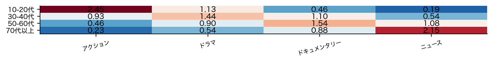
総慣性 0.4121 ＝ \lVert\mathbf S\rVert_F^2=\sum_m\delta_m^2。軸 m が受け持つ分が \delta_m^2。
帰結①：寄与率
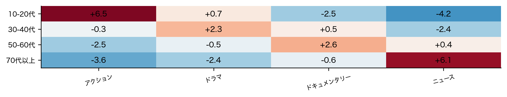
2本で 82.1%。残りの \sum_{m>2}\delta_m^2 が重み付き誤差の最小値（第10回の寄与率と同じ読み方）。
帰結②：マスごとの内訳
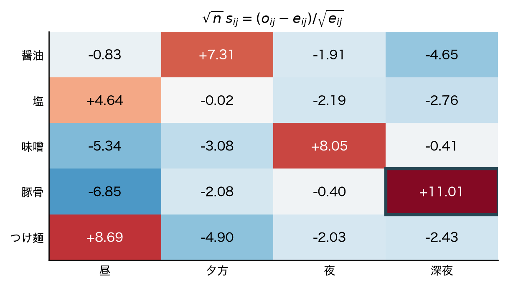
二乗して全マスで足すとχ² = 498.6。豚骨×深夜の1マスだけで 24%。
帰結③：軸はJ−1本まで
\mathbf S\,\mathbf D_c^{1/2}\mathbf 1_J=\mathbf D_r^{-1/2}\bigl(\boldsymbol r-\boldsymbol r\,\boldsymbol c^\top\mathbf 1_J\bigr)=\mathbf 0
行の形は足すと1なので、自由は J-1。4列なら軸は3本（4本目の \delta は 5e-17）。
帰結④：場面の1本目の正体
\mathbf D_r^{-1/2}\mathbf P\,\mathbf D_c^{-1/2} =\underbrace{\bigl(\mathbf D_r^{1/2}\mathbf 1_I\bigr)\bigl(\mathbf D_c^{1/2}\mathbf 1_J\bigr)^\top}_{\text{独立の表：特異値 }1}+\ \mathbf S
割っただけの表を分解すると、1本目は独立の表。2つの項は互いに直角な向きを使う。
場面③に戻る
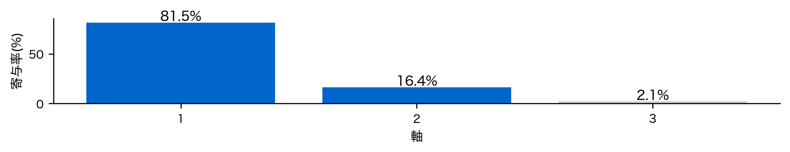
(b) の1本目も、ほぼ独立の表 (c) を拾っていた。対応分析は、この量だけの1本を先に引いてから分解する。
次の問い：地図をどう読むか
- 行の点 \mathbf F と列の点 \mathbf G を、軸1・軸2の平面に描く
- 点どうしの近さ、点の向きは、表の何を表すのか
問い：地図の上の距離と向きは、何を表すか？
帰結⑤：行の点
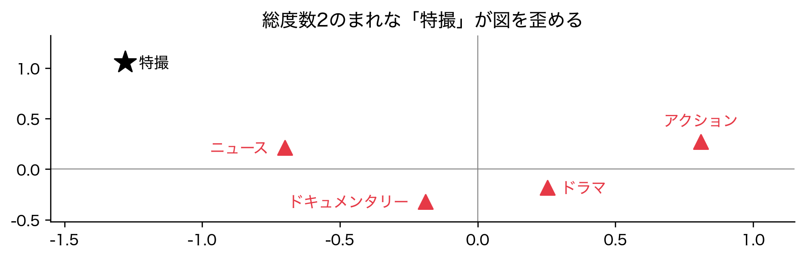
5つのメニューを、行の点 \boldsymbol f_i として軸1・軸2の平面に置いた。原点は平均の形。
帰結⑤：距離はχ²距離
すべての軸を使えば、行の点どうしの距離 ＝ 行の形のχ²距離。味噌と豚骨は 0.988。
帰結⑤：2本では縮む
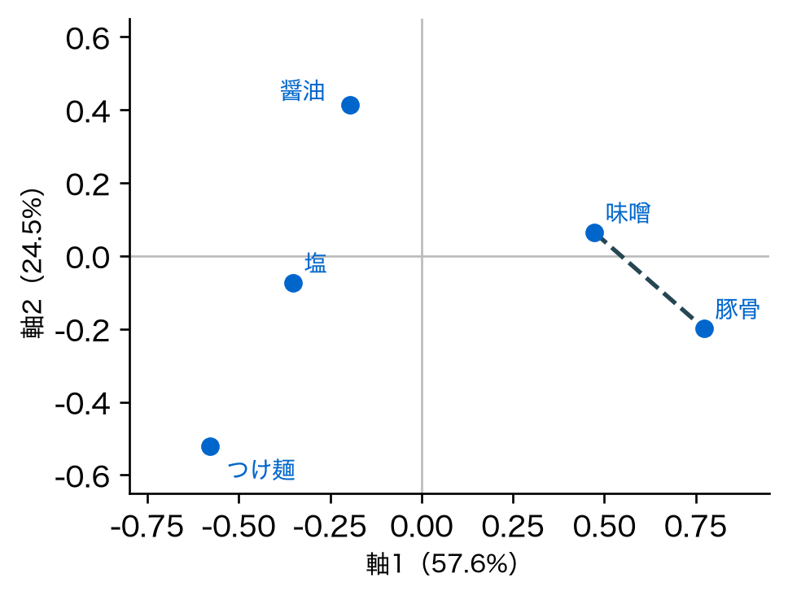
2本だけの地図の上では 0.399。捨てた軸の分だけ、距離は縮む。
帰結⑥：2本で表す割合
\frac{f_{i1}^2+f_{i2}^2}{\lVert\boldsymbol f_i\rVert_2^2}
| メニュー | 醤油 | 塩 | 味噌 | 豚骨 | つけ麺 |
|---|---|---|---|---|---|
| 2本で表す割合 | 0.95 | 0.99 | 0.38 | 0.88 | 0.99 |
行の点の長さの二乗のうち、2本が表す割合。味噌だけが 0.38。その形の違いの多くは、描かない3本目に入っている。
帰結⑦：列の点を重ねる
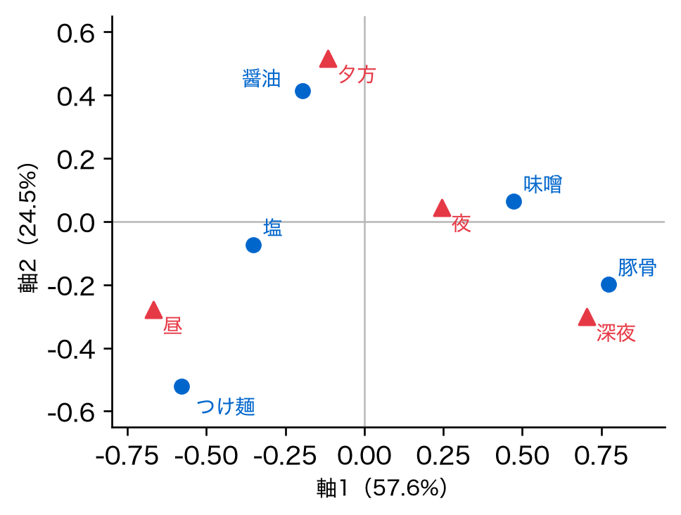
時間帯の点 \boldsymbol g_j（赤の三角）を同じ平面に重ねる。
帰結⑦：遷移公式

\mathbf F=\mathbf D_r^{-1}\mathbf P\,\mathbf G\,\boldsymbol\Delta_1^{-1}：行の点は、その行の形で列の点を平均し、1/\delta_m 倍に広げた位置。
帰結⑧：行と列は向きで読む

o/e-1\approx\sum_m f_{im}g_{jm}/\delta_m：原点から同じ向きに遠いほど、期待より多い。
帰結⑧：距離は読まない
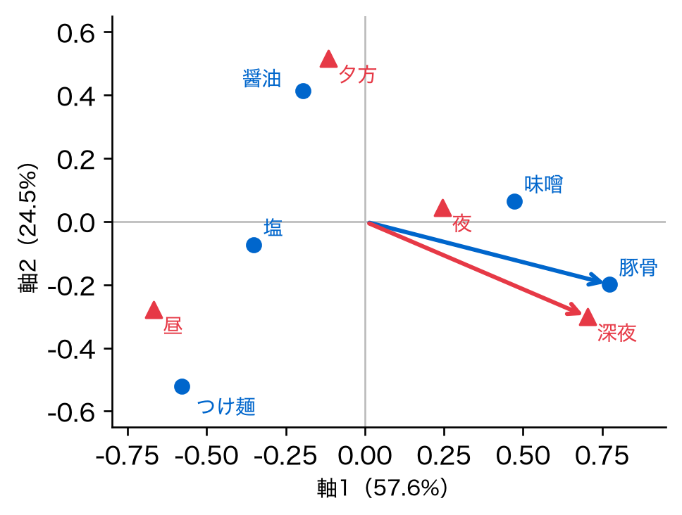
豚骨と深夜は同じ向きに遠い：期待の 2.63 倍。行の点と列の点の距離には意味が無い。
帰結⑨：まれな列は重い
d_\chi^2(\boldsymbol a_i,\boldsymbol a_{i'})=\sum_{j=1}^{J}\frac{(a_{ij}-a_{i'j})^2}{c_j}
c_j が小さい列ほど、同じ割合の差が重く効く。深夜（c = 0.190）は昼（0.273）の 1.4 倍。
第II部 実データ解析
第II部でやること
- 第I部の手順を、即席麺の一覧から作った国 × 容器の表で回す
- χ²と第I部の帰結が成り立つかを、数字で確かめる
- 地図を読み、まれな列と描かれない軸に気をつける
データ：ラーメンの一覧
| 出典 | The Ramen Raterの評価一覧（TidyTuesday 2019-06-04に収録） |
| 1件 | 評者が食べて評価した即席麺1品。全 3,180 品 |
| 行 | ブランドの国：品数の多い 10 か国 |
| 列 | 容器：袋・どんぶり・カップ・トレー（箱など少ない形は除く 37 品） |
| 表 | 10 × 4、n = 2,597 品 |
評者が食べた品の一覧で、各国の売れ筋の代表ではない。
データ：10 × 4の表

国 × 容器で品数を数えた分割表。日本・米国・韓国の品が多い。
データ：国ごとの割合
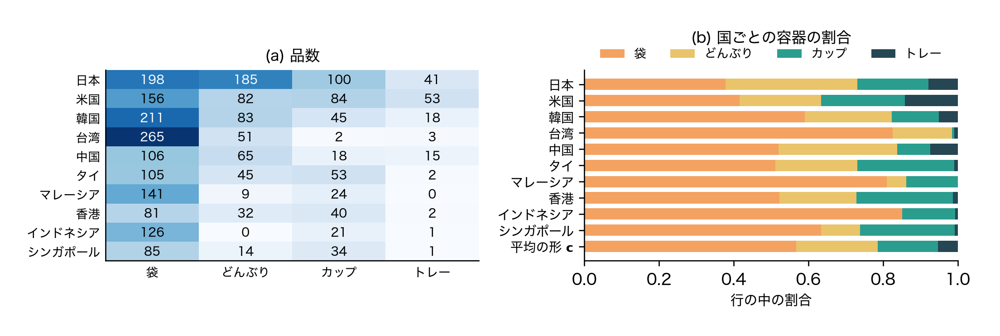
行プロファイル。台湾・インドネシアは袋、日本はどんぶり、米国はトレーが多め。
そのまま分解すると
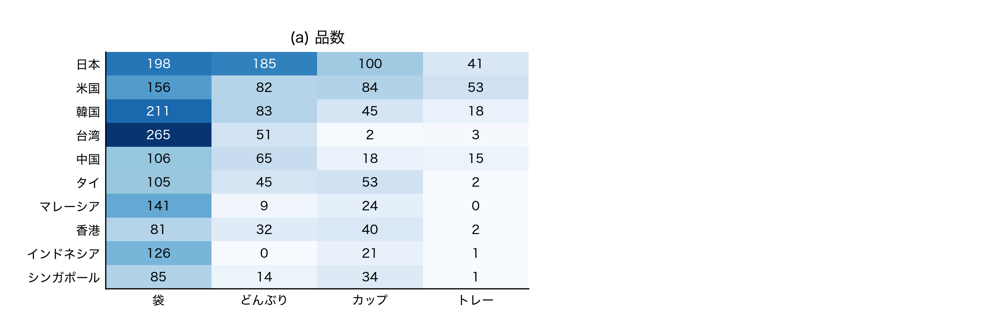
場面②のようにそのまま分解すると、1本目で 91.8%。独立の表との差は最大 54.1 品。
手続き：何をどう計算したか
- 数える：一覧から、国 × 容器の品数の表 \mathbf O（10×4）を作る
- 割る：I-6の手順で \mathbf P・\boldsymbol r・\boldsymbol c と標準化残差行列 \mathbf S を作る
- 分解する：NumPyで \mathbf S を1回特異値分解し、\delta_m・\mathbf F・\mathbf G を得る
- 確かめる：χ²をSciPyの分割表の検定の関数と比べ、χ²距離と表の再構成を確かめる
- 揺らす：箱の列を足し、さらに箱の品を4品だけ動かして、地図を描き直す
検証①：χ²が一致
| 値 | |
|---|---|
| n\sum_m\delta_m^2（自分の特異値分解） | 456.4234 |
| χ²統計量（SciPy） | 456.4234 |
自分で計算した特異値の二乗和の n 倍が、SciPyのχ²統計量と一致した（目的関数⑥）。
検証①：軸は3本
| 値 | |
|---|---|
| n\sum_m\delta_m^2（自分の特異値分解） | 456.4234 |
| χ²統計量（SciPy） | 456.4234 |
| 総慣性 \sum_m\delta_m^2=\chi^2/n | 0.1758 |
| 4本目の特異値（帰結③） | 6e-17 |
4本目は計算の誤差の大きさ。4列なので軸は3本。
検証②：距離と遷移公式
| 確かめたこと | 差の最大 |
|---|---|
| 行の形のχ²距離 ＝ 行の点（3本すべて）の距離 | 4e-16 |
| 遷移公式：\mathbf F=\mathbf D_r^{-1}\mathbf P\mathbf G\boldsymbol\Delta_1^{-1}（2本） | 6e-16 |
帰結⑤と帰結⑦が、計算の誤差の範囲で成り立つ。
検証②：再構成と誤差
| 確かめたこと | 差の最大 |
|---|---|
| 行の形のχ²距離 ＝ 行の点（3本すべて）の距離 | 4e-16 |
| 遷移公式：\mathbf F=\mathbf D_r^{-1}\mathbf P\mathbf G\boldsymbol\Delta_1^{-1}（2本） | 6e-16 |
| 3本で表を戻す（品数） | 6e-14 |
| 2本の重み付き誤差 ＝ \delta_3^2 | 0.01918 と 0.01918 |
3本で元の品数が戻り、2本の誤差は捨てた3本目の慣性に等しい（導出③）。
デモ：地図を描くと？
- 総慣性を軸に分け、何本で描くかを決める
- 国の点 → 容器の点 → 向き、の順に地図を育てる
問い：国と容器の関連は、どんな形か？
デモ①：軸ごとの慣性
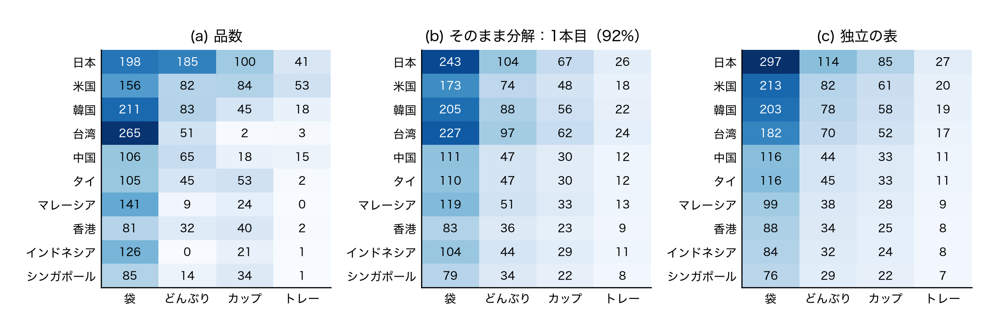
2本で 89.1%。3本目の 10.9%は地図に描かれない（落とし穴②で見る）。
デモ②：国の点
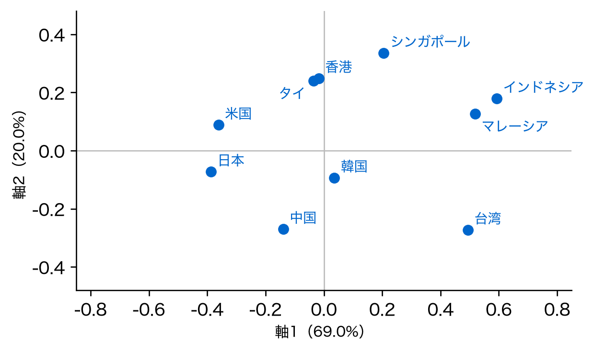
右に台湾・マレーシア・インドネシア、左に日本・米国。形の似た国が近くに並ぶ。
デモ③：容器の点を重ねる
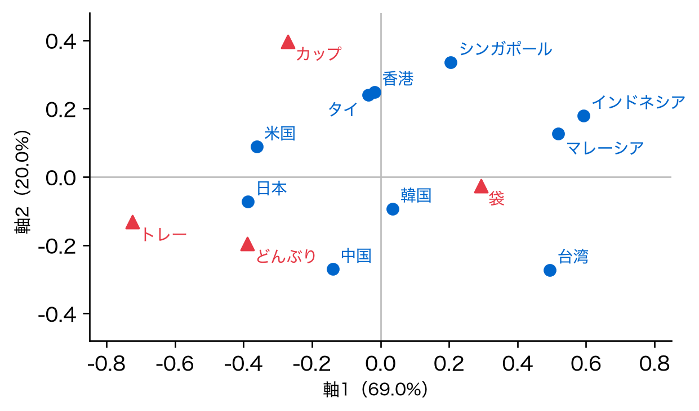
容器の点（赤の三角）を同じ平面に重ねる。右に袋、左にトレーとどんぶり、上にカップ。
デモ④：台湾と袋
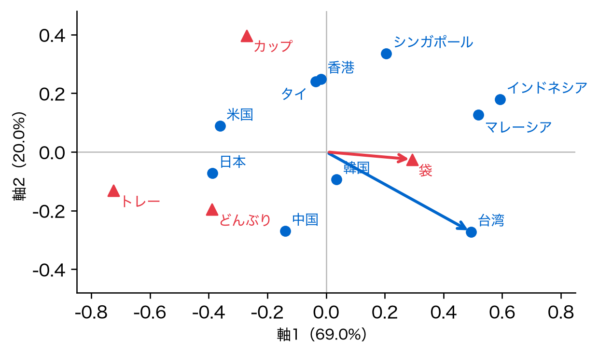
台湾と袋は、原点から同じ向き（右）にある。台湾 × 袋は期待の 1.45 倍（帰結⑧）。
解釈①：軸1は袋か容器か

軸1：右に袋、左にトレー・どんぶり。袋の多い国が右、容器入りの多い日本・米国が左。
解釈②：軸2はカップか

軸2：上にカップ、下にどんぶり。シンガポール・香港・タイが上、中国・台湾が下。韓国は原点の近く。
解釈③：期待の何倍か
| マス | 観測 | 期待度数 | 何倍か | 2本の地図の近似 |
|---|---|---|---|---|
| 台湾 × 袋 | 265 | 182.2 | 1.45 | 1.45 |
| 台湾 × カップ | 2 | 52.0 | 0.04 | 0.04 |
| 米国 × トレー | 53 | 19.6 | 2.70 | 1.69 |
| 日本 × どんぶり | 185 | 114.2 | 1.62 | 1.51 |
| シンガポール × カップ | 34 | 21.7 | 1.57 | 1.55 |
| インドネシア × どんぶり | 0 | 32.3 | 0.00 | 0.15 |
同じ向きに遠い組は期待より多く、逆向きの組は少ない。地図の向きは表の倍率を写している。
落とし穴①：箱を足すと
- 除いていた箱（30 品、全体の 1.1%）を5列目に足す
- 同じ手順で地図を描き直す
- さらに、インドネシアの箱を1品ずつ4品まで足してみる
問い：まれな列は、地図のどこに置かれるか？
落とし穴①：箱は端に出る
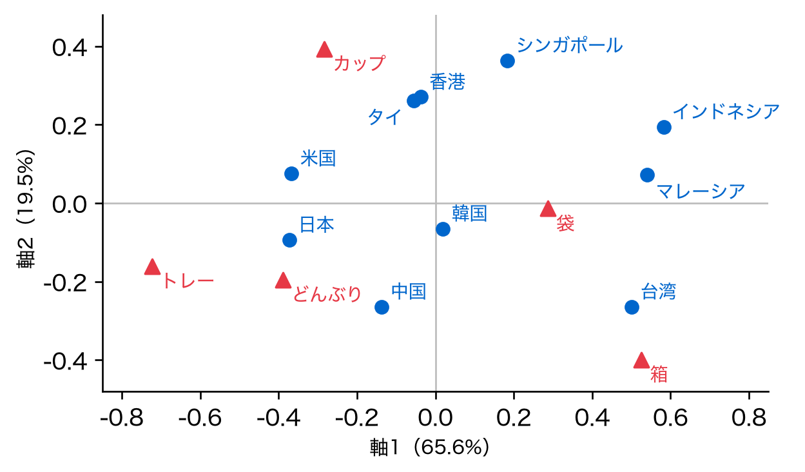
品数ではわずかな箱が、地図の端に出る。総慣性の 6.8%を箱の列が作る（帰結⑨）。
落とし穴①：4品で動く
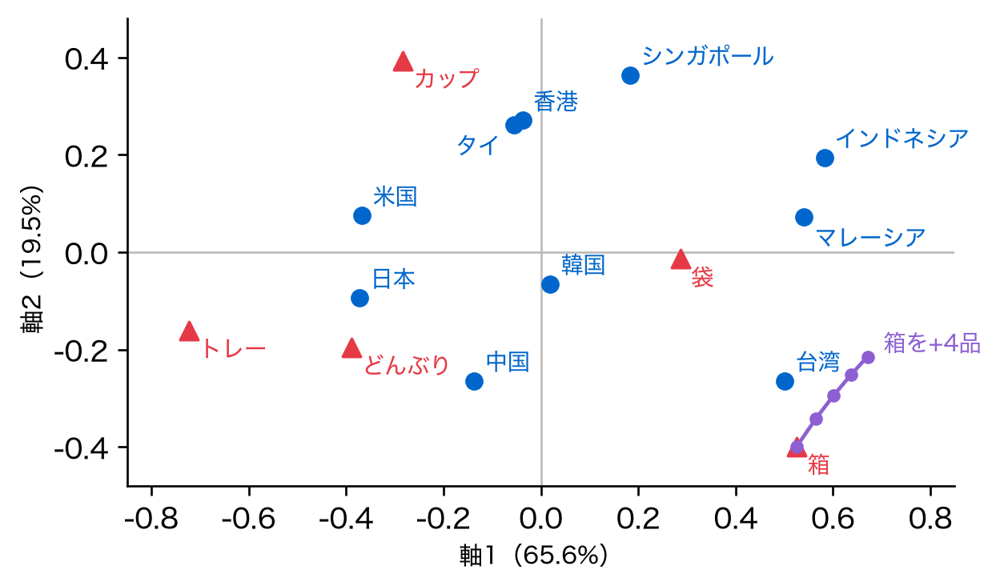
インドネシアの箱に4品足すと、箱の点は 0.23 動く。同じ4品を袋に足しても、袋は 0.001。
落とし穴②：日本と米国
地図の上では、日本と米国は 0.163 しか離れていない。形が似ていると読んでよいか。
落とし穴②：3本目で離れる

行の形のχ²距離は 0.410。日本はどんぶり、米国はトレーが多く、その違いは3本目に入っている。
落とし穴②：2本で表す割合

2本で表す割合（帰結⑥）は米国 0.64、日本 0.94。近いと読む前に、この割合を確かめる。
締め
まとめ①：独立の表を引く

そのまま分解すると、1本目は量に取られる。独立のモデル \mathbf P\approx\boldsymbol r\boldsymbol c^\top（ランク1）を先に引く。
まとめ②：重みはχ²距離

重み付き最小二乗法：\sum(p-\hat p)^2/(rc)=\lVert\mathbf S-\mathbf Y\rVert_F^2。重みは、行の形をχ²距離で比べること。
まとめ③：特異値分解を1回

総慣性 \chi^2/n=\sum\delta_m^2 を軸に分ける。行どうしは距離、行と列は向きで読む。
発展：3つ以上のカテゴリ
| 表 | 手法 |
|---|---|
| 2つのカテゴリの分割表 | 対応分析（今回） |
| 3つ以上のカテゴリ（1行＝1品、列＝カテゴリの0/1） | 多重対応分析 |
1品ごとの0/1の行列（指示行列）に同じ手順を当てる。
演習では①：映画の地図
- 演習14（映画のジャンル × 年代、延べ18,544本）：χ²は548.4
- 2本の軸で83.9%（67.3%と16.6%）。横軸は時代の軸
演習では②：今日の言葉で
- 総慣性は \chi^2/n ＝ 548.4 ÷ 18,544 ＝ 0.0296
- 83.9%は2本の累積寄与率
- 時代の軸は、標準化残差行列 \mathbf S の1本目
次回予告①：地図は全体の形
- 地図は、総慣性を軸に分けて、関連の形を見せた
- 同じ総慣性はマスにも分かれる：\chi^2=\sum_{i,j}\bigl((o_{ij}-e_{ij})/\sqrt{e_{ij}}\bigr)^2（帰結②）
次回予告②：1マスのずれ
- 台湾 × カップは -6.94、韓国 × カップは -1.69
- 独立のモデルを推定した後に残ったずれを、何と比べればよいか
問い：1セルのズレは大きいのか？
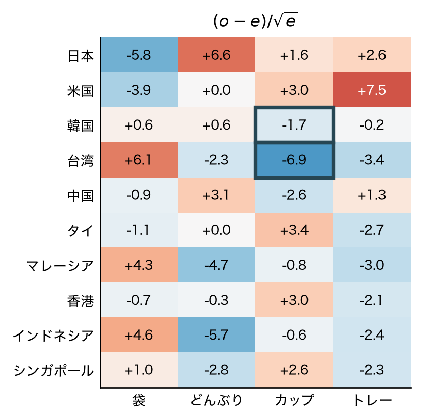